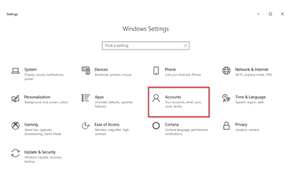
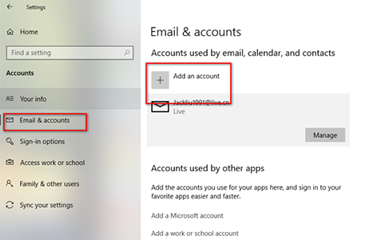
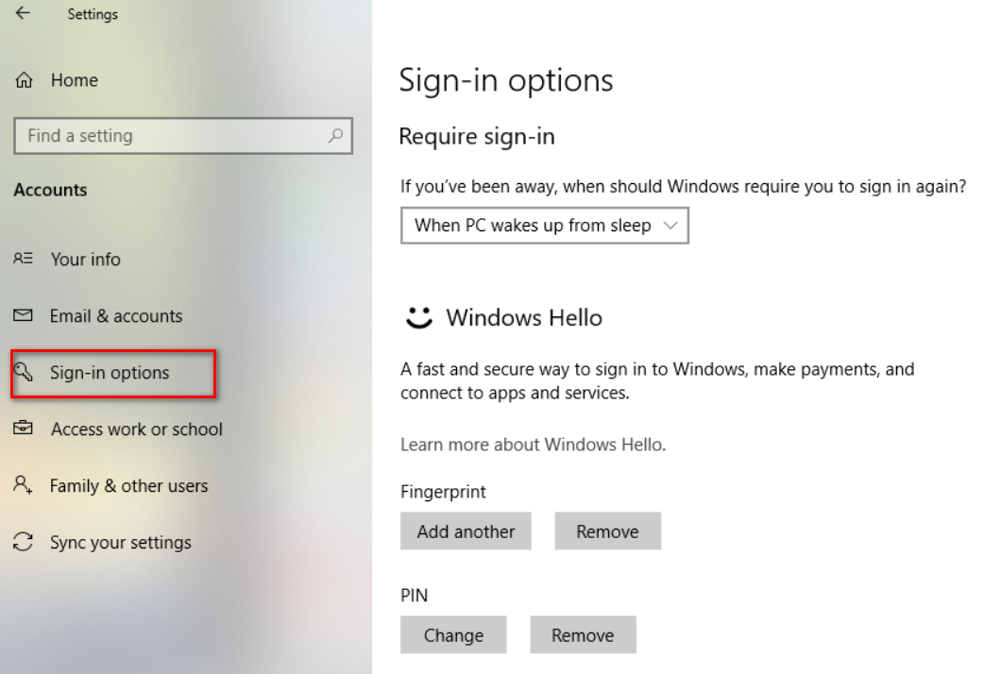
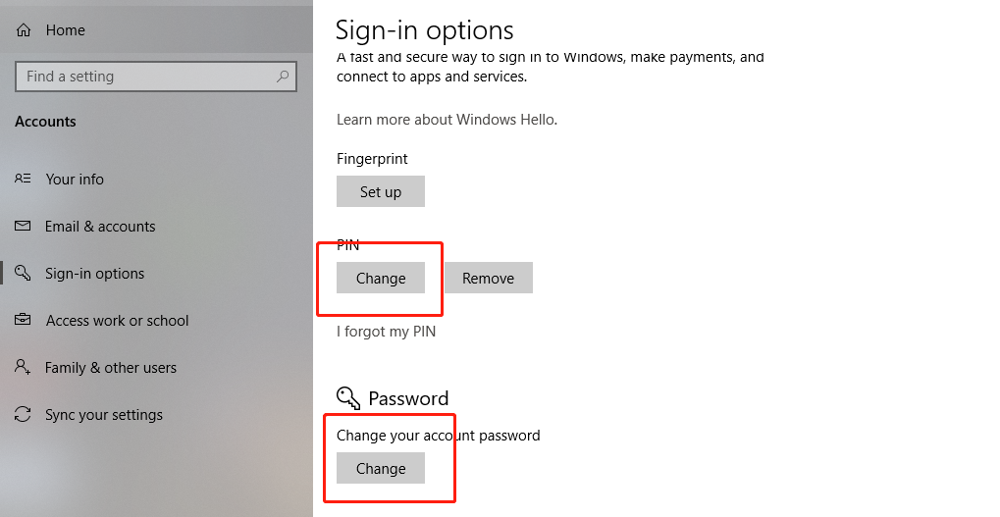
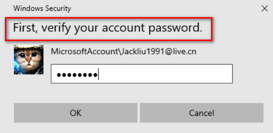
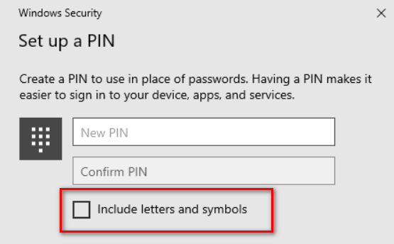
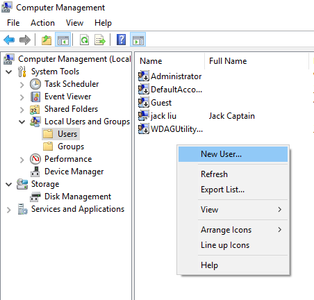
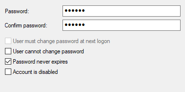

FAQ
Q1
Can WhoAreYou fingerprint software adapt to all PC peripherals with fingerprint sensor ?
Only the PC peripherals launched by WhoAreYou or co-brand with WhoAreYou can use the corresponding function and service. These PC fingerprint peripherals are labeled with WhoAreYou logo and tips, i.e:

Q2
Which Windows version do WhoAreYou PC fingerprint peripherals adapt to?
WhoAreYou PC fingerprint peripherals adapt to all 32bit/64bit leading operation systems, including win7, win8, win8.1, and win10. WhoAreYou will keep pace with new version of Windows system.
Q3
Can WhoAreYou PC fingerprint peripherals support plug-and-play?
When fingerprint peripherals and computers are connected, non-fingerprint function support plug-and-play. For fingerprint function, you need to download 【WhoAreYou PC Peripherals Fingerprint Application Tools】from technical support page in WhoAreYou official website (www.whoareyou.live), make installation, register and complete the corresponding settings.
Q4
How many users can PC fingerprint peripheral support ?
The device supports multiple users, but considering privacy and security in fingerprint function, it is recommended for personal use only, in order to better protect your privacy and security.
Q5
If I use a finger to encrypt file, is it possible to use another finger to make decryption?
Yes, all fingerprints enrolled in WhoAreYou account can decrypt the encrypted files.
Q6
Can I close or uninstall 【WhoAreYou PC Peripherals Fingerprint Application Tools】after installation and fingerprint setting ?
The fingerprint function can only be used properly when 【WhoAreYou PC Peripherals Fingerprint Application Tool】is running (signed in). The tool defaults to auto-start in computer boot for your best usability, please ensure that computer manager, anti-virus software don’t cease the auto-start, or uninstall the software by fault. The software can be minimize to the system tray, which have no impact on computer operation.
Q7
Where is the enrolled fingerprint data stored? Is there a security risk of leakage or phishing?
The user's fingerprint data is encrypted and stored in security chip. The security chip has strict access control to limit fingerprint data reading. The private key and fingerprint data are implement in the security chip only. Don’t worry about leakage or phishing.
Q8
What if PC fingerprint peripheral is damaged, lost or replaced ?
If the PC fingerprint peripheral is damaged or lost, user can still have fingerprint function and service by purchasing a new PC peripheral launched by WhoAreYou or supported by WhoAreYou fingerprint technology. But you need to reset and enroll fingerprints again before using.
Q9
What if the software report failure when beginning to enroll fingerprints ?
It's due to access control setting. Users need to create a local account or Microsoft account in administrator's permission,
without which you can’t enroll fingerprints in【WhoAreYou PC Peripheral Fingerprint Application Tool】.
The setting steps are as follows:
STEP1：Windows Setting - Account

STEP2：Click Add Accounts and Set Administrator permission

Q10
How to set account password and PIN code?
STEP1: Take Windows 10 as an example. First, enter Windows Settings→Account→Sign in options.

STEP2: Please create Password and click Add button under PIN. If the account has a password already, you can add PIN code directly.

STEP3: Verify the password in pop-up, enter the password just set or the original account password, and then click Confirm.

STEP4: The PIN code can be set after the password is verified. You can use a 4-bit PIN code or a longer code.

After setting up, please lock screen and login again , the system will prompt for PIN code.
After setting up, please lock screen and login again , the system will prompt for PIN code.
Q11
How to use WhoAreYou Fingerprint peripherals in Windows 7 ?
If your current account type is "Administrator", "Guest" or "Standard Account", you will not be able to set up fingerprint applications. Please create a new account by following steps.
STEP1: Right-click the computer icon in desktop → Manage → Local User and Group → User

STEP2: Click on "Create" to set password according to the system prompt. Note that in password setting page, cancel "User must change password next time log in", and select "Password never expire".

Now a standard account has been created, but fingerprint function is not yet available. Next, you need to upgrade the standard account to an administrative account. Right-click on the new account→property→affiliation→add, enter "administrators", click "Check name"→"Confirm", the new administrative account is finally set up.
Q12
What if Windows Hello fingerprint enrollment failed in Windows 8.1 system ?
Because Windows Hello fingerprint enrollment times limit in Windows 8.1 system is 8, which is a conflict with WhoAreYou fingerprint peripherals ( 4 times for S-series, and 14 times for N-series), the fingerprint data can’t be stored properly. In order to avoid this and ensure best usability, it is recommended to enroll fingerprints by【WhoAreYou PC Peripherals Fingerprint Application Tool】.
Q13
What if Windows Hello reports ‘Fingerprint Already Enrolled’ when you make registration ?
The fingerprint is already stored in the mouse, please login 【WhoAreYou PC Peripheral Fingerprint Application Tool】,delete all the previous enrolled fingerprints and make enrollment again.
Q14
Is the fingerprint in Windows Hello synchronized with WhoAreYou Software?
Fingerprints enrolled in Windows Hello are automatically synchronized into【WhoAreYou PC Peripheral Fingerprint Application Tool】when the software starts. The fingerprints enrolled in Windows Hello can be used to login the software, but they can’t be managed in the software. The fingerprints enrolled in【WhoAreYou PC Peripheral Fingerprint Application Tool】are automatically synchronized into Windows hello. These fingerprints can be managed both in software and Windows Hello.